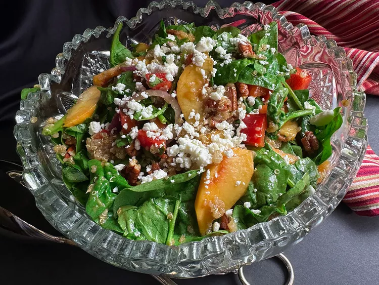

Peach Quinoa Salad

Peach Quinoa Salad
This peach quinoa salad is a lively version of spinach salad,
using fresh summer peaches, quinoa, pecans,
feta cheese, and a simple honey-Dijon vinaigrette.
Ingredients
- 1/3 cup quinoa
- 1 cup vegetable broth or water
- 3 ounces fresh spinach, or more to taste, torn into bite-sized pieces
- 1/2 cup chopped red bell pepper
- 1/2 cup pecan pieces
- 1/3 cup thinly sliced red onion, rinsed and drained
- 3 small peaches - peeled, pitted, and sliced
- 2 tablespoons orange juice
- 1/3 cup extra-virgin olive oil
- 3 tablespoons balsamic vinegar
- 1 teaspoon Dijon mustard
- 2 teaspoons honey
- salt and freshly ground black pepper to taste
- 2 tablespoons crumbled feta, or more to taste (optional)
Steps
- Place quinoa in a fine mesh strainer and rinse under cold water. Drain.
- Bring broth to a boil over medium heat in a saucepan. Add quinoa, cover, and reduce heat to low. Simmer until the liquid is absorbed and quinoa is tender, about 15 minutes. Remove from heat and let stand, covered, about 5 minutes. Fluff with a fork and allow to cool to room temperature, about 15 minutes.
- Meanwhile, combine spinach, bell pepper, pecans, and drained red onion slices in a salad bowl.
- In a small bowl, toss peach slices with orange juice (to slow oxidation) and add to the salad bowl.
- For dressing, combine olive oil, balsamic vinegar, Dijon mustard, honey, and salt and pepper in a small container or jar with a lid. Place the lid on the container and shake until ingredients are well blended.
- Add quinoa to the salad ingredients, pour dressing over, and gently toss to combine. Garnish with feta crumbles and serve immediately.